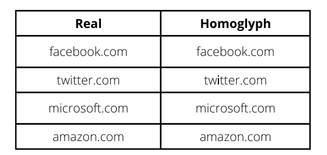
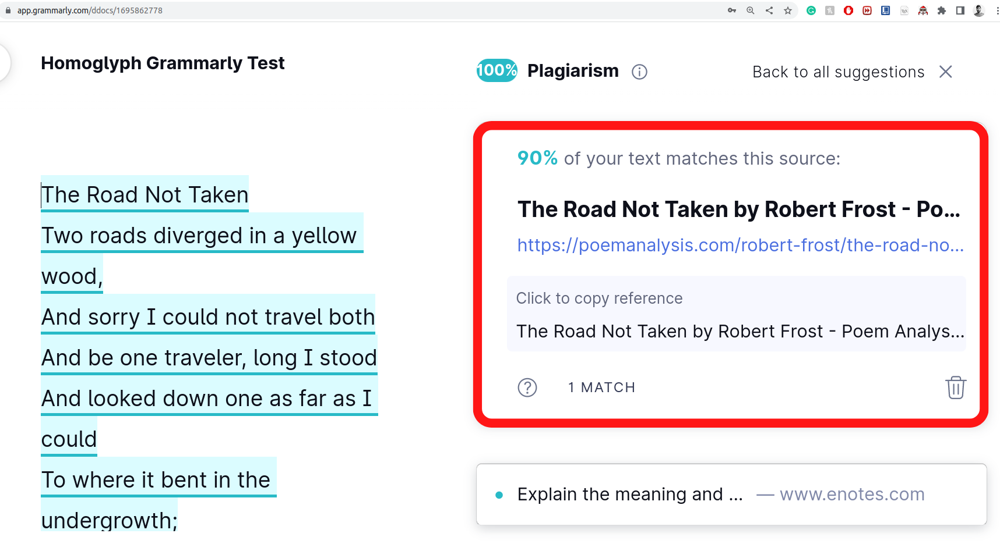
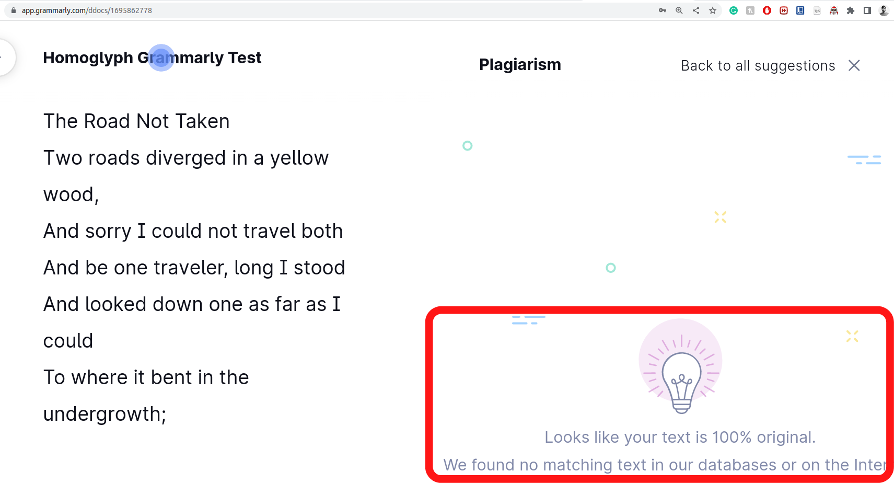
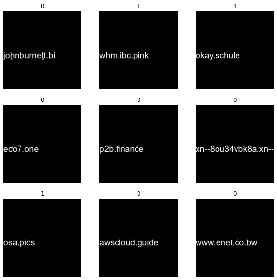
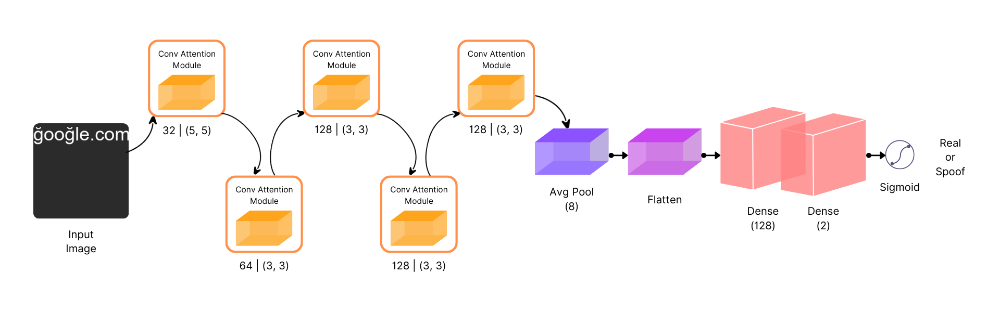
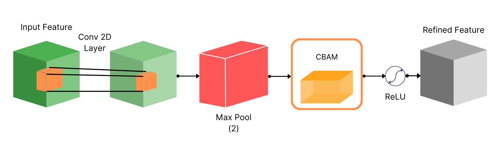

Abstract
Cyber attacks deceive machines into believing something that does not exist in the first place. However, there are some to which even humans fall prey. One such famous attack that attackers have used over the years to exploit the vulnerability of vision is known to be a Homoglyph attack. It employs a primary yet effective mechanism to create illegitimate domains that are hard to differentiate from legit ones. Moreover, as the difference is pretty indistinguishable for a user to notice, they cannot stop themselves from clicking on these homoglyph domain names. In many cases, that results in either information theft or malware attack on their systems.
Existing approaches use simple, string-based comparison techniques applied in primary language-based tasks. Although they are impactful to some extent, they usually fail because they are not robust to different types of homoglyphs and are computationally not feasible because of their time requirement proportional to the string's length. Similarly, neural network-based approaches are employed to determine real domain strings from fake ones. Nevertheless, the problem with both methods is that they require paired sequences of real and fake domain strings to work with, which is often not the case in the real world, as the attacker only sends the illegitimate or homoglyph domain to the vulnerable user.
In our work, we created GlyphNet, an image dataset that contains 4M domains, both real and homoglyphs. Additionally, we introduce a baseline method for a homoglyph attack detection system using an attention-based convolutional Neural Network. We show that our model can reach state-of-the-art accuracy in detecting homoglyph attacks with a 0.93 AUC on our dataset.
Introduction
In cyber security, attackers employ different attacks to infiltrate our systems and networks, with the objective varying from stealing crucial information to inflicting system damage. One such deceptive attack is the homoglyph attack, which involves an attacker trying to fool humans and computer systems by using characters and symbols that may appear visually similar to characters used in real domain and process names but are different. For example, a typical homoglyph attack may involve changing “d” to “cl”, “o” to “θ”, and “l” to “1”.



Dataset

Proposed Dataset
We have proposed a dataset consisting of real and homoglyph domains. In order to generate homoglyph domains, real domains are needed. We have obtained domains from the Domains Project, one of the largest collections of publicly available active domains. The entire repository comprises 500M domains, and we restricted our work to 2M domains due to hardware restrictions.
Homoglyph Creation Algorithm
Homoglyph generation is an important task, as one needs to ensure enough randomness to make it appear real and keep the process simple enough to fool the target. Publicly available tools like dnstwist replace every character in the real input domain with their respective glyphs. It generates poor homoglyphs for the large part because it relies on paired data, which is not fit to serve the purpose practically. We created our novel algorithm for the generation of homoglyph domains to ensure that real homoglyphs are generated with randomness and closeness. To achieve this, we sample homoglyph noise characters using Gaussian sampling from the glyph pool. We used 1M real domains to generate 2M homoglyphs with a single glyph character and, to introduce diversity in our dataset, we reran this algorithm on the remaining 1M real domains to generate homoglyph domains with two-character glyphs. Finally, we have 4M real and homoglyph domains.
Image Generation
Homoglyph attacks exploit the weakness of human vision to differentiate real from homoglyph domain names. From a visual perspective, we are interested in learning the visual characteristics of real and homoglyph domain names. To do so, we rendered images from the real and homoglyph strings generated via our algorithm. We used the Arial typeface as our chosen font, size 28, on a black background with white text from the middle left of the image; the image size is 150 × 150.
The dataset is available on the Hugging Face Hub at
Akshat4112/Glyphnet,
with pairs (domain / homoglyph) and images configs and ready-made
train/validation/test splits.
Methodology


Experimentation
Dataset and Metrics
We split our dataset into three parts — train, validation, and test — with a ratio of 70 : 20 : 10 respectively, which amounts to 2.8M, 0.8M, and 0.4M images. Each image size is 150 × 150. We use accuracy for measuring the performance of the classification task. Since accuracy can sometimes be misleading in a binary classification task, especially for unbalanced datasets, we also consider precision, recall, and F1 score as evaluation metrics, even though our dataset is balanced. We further use the AUC score to compare our solution with other works.
Experimental Settings
For training, we used binary cross-entropy as the loss function. We used the RMSProp optimizer to optimize the loss, with a learning rate of 10e−4, and the network is trained for 30 epochs with early stopping. We trained with a batch size of 256, and tracked performance with accuracy-vs-epochs and loss-vs-epochs plots.
Results
We evaluated our model on unpaired domain-name data. We took an input string from the dataset, converted it into an image, and fed it to the model to generate a binary label. Out of the 400k test images, our model correctly categorized 372k images, resulting in 0.93 accuracy. Our model achieved an F1-score of 0.93, 13 points higher than previous models, and outperforms other baselines and comparable works on accuracy, precision, recall, and AUC. The performance of other models on our dataset was also below par compared with the datasets proposed in their works, signifying our dataset’s variation, difficulty, and importance.
| Metric | GlyphNet |
|---|---|
| Accuracy | 0.93 (372k / 400k test images) |
| F1-score | 0.93 |
| AUC | 0.93 |
References
- Bahdanau, D.; Cho, K.; and Bengio, Y. 2014. Neural machine translation by jointly learning to align and translate. arXiv preprint arXiv:1409.0473.
- Boor, V.; Overmars, M. H.; and Van Der Stappen, A. F. 1999. The Gaussian sampling strategy for probabilistic roadmap planners. In Proceedings 1999 IEEE International Conference on Robotics and Automation (Cat. No. 99CH36288C), volume 2, 1018–1023. IEEE.
- Cheng, L.; Liu, F.; and Yao, D. 2017. Enterprise data breach: causes, challenges, prevention, and future directions. Wiley Interdisciplinary Reviews: Data Mining and Knowledge Discovery, 7(5): e1211.
- Chollet, F.; et al. 2015. Keras. Damerau, F. J. 1964. A technique for computer detection and correction of spelling errors. Communications of the ACM, 7(3): 171–176.
- Deng, J.; Dong, W.; Socher, R.; Li, L.-J.; Li, K.; and Fei-Fei, L. 2009. Imagenet: A large-scale hierarchical image database. In 2009 IEEE conference on computer vision and pattern recognition, 248–255. IEEE.
- Ginsberg, A.; and Yu, C. 2018. Rapid homoglyph prediction and detection. In 2018 1st International Conference on Data Intelligence and Security (ICDIS), 17–23. IEEE.
- Goodfellow, I.; Pouget-Abadie, J.; Mirza, M.; Xu, B.; Warde-Farley, D.; Ozair, S.; Courville, A.; and Bengio, Y. 2014. Generative adversarial nets. Advances in neural information processing systems, 27.
- He, K.; Zhang, X.; Ren, S.; and Sun, J. 2016. Deep residual learning for image recognition. In Proceedings of the IEEE conference on computer vision and pattern recognition, 770–778.
- Helms, M. M.; Ettkin, L. P.; and Morris, D. J. 2000. The risk of information compromise and approaches to prevention. The Journal of Strategic Information Systems, 9(1): 5–15.
- Hoffer, E.; and Ailon, N. 2015. Deep metric learning using triplet network. In International workshop on similarity-based pattern recognition, 84–92. Springer.
- Hong, J. 2012. The state of phishing attacks. Communications of the ACM, 55(1): 74–81.
- Isola, P.; Zhu, J.-Y.; Zhou, T.; and Efros, A. A. 2017. Image-to-image translation with conditional adversarial networks. In Proceedings of the IEEE conference on computer vision and pattern recognition, 1125–1134.
Citation
If you use GlyphNet in your research, please cite:
@article{gupta2023glyphnet,
title = {GlyphNet: Homoglyph domains dataset and detection using attention-based Convolutional Neural Networks},
author = {Gupta, Akshat and Tomar, Laxman Singh and Garg, Ridhima},
journal = {arXiv preprint arXiv:2306.10392},
year = {2023}
}